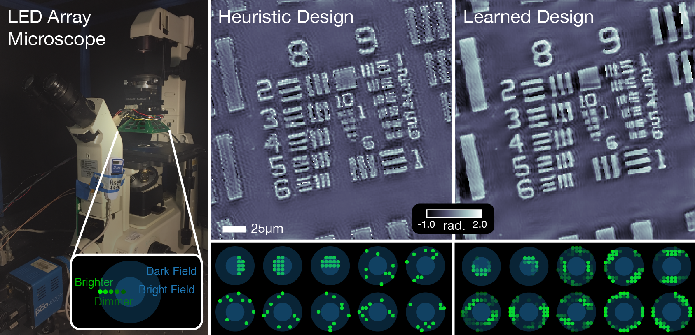

Data-Driven Design for Fourier Ptychographic Microscopy
Michael Kellman,
Emrah Bostan,
Michael Chen,
Laura Waller
|

Fourier Ptychographic Microscopy (FPM) achieves super-resolution Quantitative Phase Imaging (QPI) with an LED array microscope (left). Here, we show the super-resolved QPI reconstruction for heuristic multiplexing designs (middle) and our proposed learned designs (right). The respective LED pattern designs are shown below the phase reconstructions. Our learned LED source patterns enable improved reconstruction quality without sacrificing temporal resolution.
|
Abstract
Fourier Ptychographic Microscopy (FPM) is a computational imaging method that is able to super-resolve features beyond the diffraction-limit set by the objective lens of a traditional microscope. This is accomplished by using synthetic aperture and phase retrieval algorithms to combine many measurements captured by an LED array microscope with programmable source patterns. FPM provides simultaneous large field-of-view and high resolution imaging, but at the cost of reduced temporal resolution, thereby limiting live cell applications. In this work, we learn LED source pattern designs that compress the many required measurements into only a few, with negligible loss in reconstruction quality or resolution. This is accomplished by recasting the super-resolution reconstruction as a physics-based network and learning the experimental design to optimize the network's overall performance. Specifically, we learn LED patterns for different applications (e.g. amplitude contrast and quantitative phase imaging) and show that the designs we learn through simulation generalize well in the experimental setting. Further, we discuss a context-specific loss function, practical memory limitations, and interpretability of our learned designs.
Citations
Michael Kellman, Emrah Bostan, Michael Chen, Laura Waller. "Data-driven Design for Fourier Ptychographic Microscopy." International Conference for Computational Photography. IEEE, 2019.
Michael Kellman, Emrah Bostan, Nicole Repina, Laura Waller. "Physics-based Learned Design: Optimized Coded-Illumination for Quantitative Phase Imaging." Transactions on Computational Imaging. IEEE, 2019.
Copyright 2019 Michael Kellman. All rights reserved.
Template borrowed from Jon Barron.

|
|